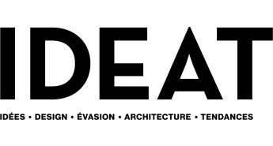
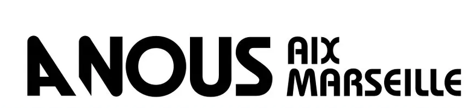

Vu dans la presse




DécorationPour vous qui voulez enfin profiter de votre extérieur l'été, même sous +35°…
"Excellentes prestations avec Teck Aménagement pour la réalisation de nos deux pergolas / ombrières. Des artisans rigoureux, un travail soigné, des délais respectés et un très beau rendu esthétique. Nous recommandons vivement !"
"Une superbe pergola, très design… à la hauteur de nos espérances. Une vraie plus-value pour la maison. Une entreprise sérieuse et réactive qui a respecté tous ses engagements."
"Nous sommes ravis ! Une prestation de qualité, des conseils avisés et un suivi au millimètre de la commande à l'installation. On réfléchit déjà à un autre projet avec eux, je recommande à 1000 % !"
"Je suis très satisfaite de la magnifique pergola. Franck a été très réactif, à l'écoute, et de très bons conseils. Son équipe était adorable et très pro ! Un design juste DE FOLIE !!!"
"Rénovation de nos extérieurs, terrasse en bois exotique et pergola sur toute la longueur de la maison. Une merveille, très belle prestation, chantier terminé dans les temps. Je recommande à 200 %."
"Très grande satisfaction ! La luminosité reste la même à l'intérieur de la maison tout en protégeant ma terrasse du soleil. Résultat impeccable et conforme à ce qui avait été annoncé. Je recommande les yeux fermés."


Décoration3 raisons qui font toute la différence
Un bois si dense qu'il bloque la transmission de la chaleur : nous avons mesuré 42°C en plein soleil contre 32°C sous la pergola.
La couleur naturelle et la chaleur du bois se fondent dans votre décor, portées par une structure légère, épurée et aérée.
Vivez dehors sans rien entretenir : notre bois traverse les années et les intempéries sans se déformer, sans lasure et sans ponçage.
Une vraie sensation de fraîcheur sous la pergola, même en pleine chaleur.
Un design fin qui laisse circuler l'air et s'intègre avec élégance.
Votre intérieur reste lumineux toute l'année, sans assombrir vos pièces.